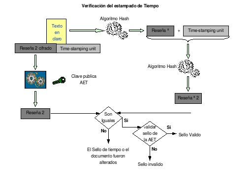

16.4.- Verificación de estampillado de tiempo
El destinatario debe aplicar la función hash al documento (Texto en claro) y adjunta la unidad de estampado de tiempo (time-stamping unit) y volver a aplicar la función hash al conjunto y compararla con la recibida, que se tiene que descifrar, si ambos no son iguales el sellado de tiempo o el documento fueron alterados y si son iguales se debe validar el sello. (ver figura S5.4-1).

figura S5.4-1, Esquema, Verificación del estampillado de tiempo